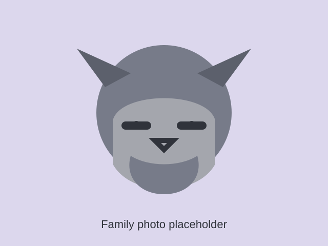
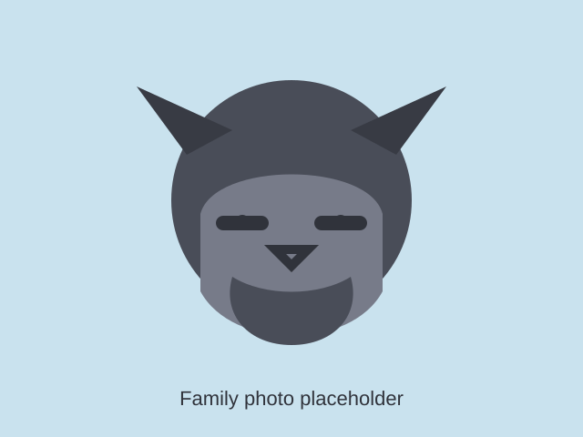

Family dog one
Luna
Luna is a gentle and curious companion who enjoys quiet walks, close family time, and keeping an eye on everything happening at home.
Small dogs, big personalities
Welcome to our family page
This is a small, friendly introduction to our two Miniature Schnauzers and the breed we love. Explore their personalities, learn about their history, and discover the everyday joys of responsible dog companionship.
Meet the dogsOur companions
Every dog has a unique character. These profiles are ready for the family’s own details and photographs.

Family dog one
Luna is a gentle and curious companion who enjoys quiet walks, close family time, and keeping an eye on everything happening at home.

Family dog two
Oskar is an alert, cheerful Schnauzer with a playful spirit. He loves learning new things and joining the family on outdoor adventures.
Learn more
Miniature Schnauzers are known for their expressive eyebrows, wiry coat, lively minds, and affectionate family nature. Read about their roots and the culture around living with them.